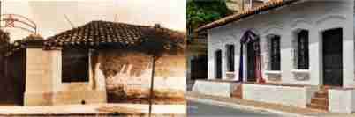

En el año 1811 se reunieron aquí los conspiradores, que, en la noche del 14 de mayo, dieron el golpe que posibilitó la Independencia, convirtiéndose así en testimonio y símbolo de la Patria y del espíritu de independencia de la Nación Paraguaya.
Se cita a: Fulgencio Yegros, Vicente Ignacio Iturbe, Pedro Juan Caballero, Fernando de la Mora, José Agustín Molas y José Gaspar Rodríguez de Francia.
Originalmente fue residencia de los hermanos Martínez Sáenz.
El Capitán Pedro Juan Caballero, oriundo de Tobatí y pariente de los dueños de casa, se hospedaba allí cuando venía a Asunción. Enfrente, era la casa de Doña Juana M. de Lara, y albergaba allí a su sobrino Vicente Ignacio Iturbe.
En el año 1943, fue adquirida por el Estado Paraguayo, y, en el año 1961, es declarada como Monumento Nacional, en ese año también se iniciaron los trabajos de restauración del edificio convirtiéndose en Museo Histórico Nacional.
Parte de la casa, ubicada sobre la calle presidente Franco, fue vendida al sector privado, parte que comenzó a demolerse al poco tiempo, pero, la intervención del Señor Juan Bautista Gill Aguinaga, presidente del Instituto de Numismática y Antigüedades del Paraguay, hizo posible que las Autoridades del Gobierno Nacional ordenasen la suspensión de la demolición iniciada. En el año 2011, el Gobierno adquiere nuevamente el área de la casa antes perdida. Hoy día, en dicho lugar se encuentra el Patio Bicentenario.
Posee un estilo colonial previo a la Independencia cuando el país era una colonia española.
Ha sido refaccionada y debido a estas modificaciones, realizadas a través de los años, se ha desvirtuando parte de la esencia del estilo arquitectónico que ella representa. Esto se observa en las fachadas que dan al Callejón Histórico y sobre la calle 14 de mayo, las cuales ya no cuentan con las galerías externas, que, en algunos de sus lados, debieron ser demolidas, en las "rectificaciones" del mandato del Dr. José Gaspar Rodríguez de Francia. Estas galerías, comunicaban el interior de las casas con la calle.
La fachada sobre la calle presidente Franco cuenta con un alero de considerable longitud sostenido por vigas de madera, dicho alero se complementa también con una plataforma elevada con respecto a la calle.
Se emplearon materiales propios del país, los cimientos eran de piedra bruta extraída de canteras cercanas a la capital. La estructura está conformada por gruesos pilares de madera que se observan en la galería del patio interior, estas galerías además de comunicar los espacios interiores con el exterior o patio también protegían de la lluvia a los muros que en aquel entonces eran de adobe. El techo está conformado por tejas cerámicas españolas sostenidos por vigas labradas a mano, los tirantes están construidos con palmas y tacuarillas. Los pisos son de ladrillos cerámicos tanto en el interior del edificio como en el patio interno. Las puertas son de madera labradas a mano y las ventanas cuentan además con rejas de madera.